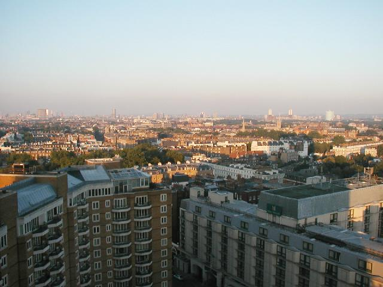

'ullo Mates
The London Log 03
Right.

On my feet 6 days from 9AM - 12 PM.
View of downtown from hotel window in Kensington.
There are far more stories than I can tell here.
Ethos
Homecoming
Gimme my Stuff Back
Beggary and Deception
Victory
Big Ben
Gimme That Old Time Religion
Science
The Three Worst Tourist Traps in London
Wax
221B
Diagon Alley
Je Suis Les Mis
The Morbid Contents Page